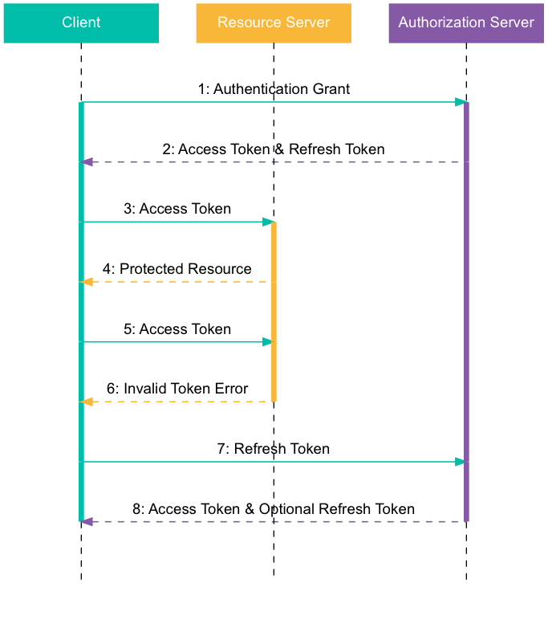
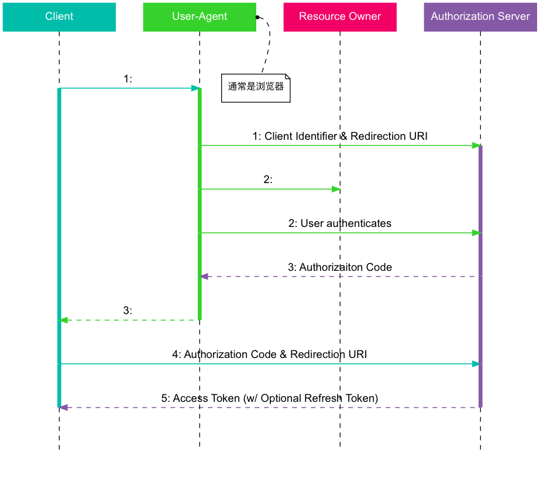

OAuth 2.0 应用授权协议
Table of Contents
1 OAuth 2.0 协议
2 介绍
2.1 角色
OAuth 定义了如下四个角色：
- Resource Owner: 资源所有者，能够许可对受保护资源的访问权限的实体。当资源所有 者是个人时，它被称为最终用户
- Resource Server: 资源服务器，托管受保护资源的服务器，能够接收和响应使用访问 令牌对受保护资源的请求
- Client: 客户端，通常是三方应用。使用资源所有者的授权代表资源所有者发起对受 保护资源的请求的应用程序。术语 "客户端" 并非特指任何特定的的实现特点（例如： 应用程序是否是在服务器、台式机或其他设备上执行）
- Authorization Server: 授权服务器，在成功验证资源所有者且获得授权后颁发访问 令牌给客户端的服务器
2.2 协议流程及授权方式
协议的流程如下图所示
- 客户端从资源所有者处请求授权。授权请求可以直接向资源所有者发起（如图所示）， 或者更可取的是通过授权服务器作为中介间接发起。
- 客户端收到授权许可，这是一个代表资源所有者的授权的凭据，使用本规范中定义的 四种许可类型之一或者使用扩展许可类型表示。授权许可类型取决于客户端请求授权 所使用的方法以及授权服务器支持的类型。
- 客户端与授权服务器进行身份认证并出示授权许可以请求 Access Token 。
- 授权服务器验证客户端身份并验证授权许可，若有效则颁发 Access Token 。
- 客户端从资源服务器请求受保护资源并出示 Access Token 进行身份验证。
- 资源服务器验证 Access Token ，若有效则处理该请求。
客户端必须得到用户的授权（authorization grant），才能获得令牌（access token）。 OAuth 2.0 定义了四种授权方式
- 授权码许可（authorization code）
- 简化许可（implicit）
- 密码许可（resource owner password credentials）
- 客户端许可（client credentials）
2.3 Access Token
Access Token 即访问令牌，Access Token 是用来包含资源的，客户端在访问资源是必 须携带 Access Token 才能正确获取到相应的资源
Access Token 是用于访问受保护资源的凭据。 Access Token 是一个代表向客户端颁发的授权的字 符串。该字符串通常对于客户端是不透明的。令牌代表了访问权限的由资源所有者许可 并由资源服务器和授权服务器实施的具体范围和期限
2.4 Refresh Token 及刷新过程
Refresh Token 即刷新令牌。如果用户访问的时候，客户端的 Access Token 已经过期， 则需要使用 Reresh Token 申请一个新的 Access Token 。刷新 Access Token 的流程 如下图

Refresh Token 是用于获取 Access Token 的凭据。Refresh Token 由授权服务器颁发给 客户端，用于在当前 Access Token 失效或过期时，获取一个新的 Access Token ，或 者获得相等或更窄范围的额外的 Access Token （ Access Token 可能具有比资源所有者 所授权的更短的生命周期和更少的权限）。颁发 Refresh Token 是可选的，由授权服务器 决定。如果授权服务器颁发 Refresh Token，在颁发访问令牌时它被包含在内
- 客户端通过与授权服务器进行身份验证并出示授权许可请求 Access Token
- 授权服务器对客户端进行身份验证并验证授权许可，若有效则颁发 Access Token 和 刷新令牌
- 客户端通过出示 Access Token 向资源服务器发起受保护资源的请求
- 资源服务器验证 Access Token ，若有效则满足该要求
步骤 3和步骤 4重复进行，直到 Access Token 到期。如果客户端知道 Access Token 已过期，跳到步骤 7，否 则它将继续发起另一个对受保护资源的 请求- 由于 Access Token 是无效的，资源服务器返回无效令牌错误。
- 客户端通过与授权服务器进行身份验证并出示 Refresh Token，请求一个新的 Access Token 。客户端身份验证要求基于客户端的类型和授权服务器的策略
- 授权服务器对客户端进行身份验证并验证 Refresh Token，若有效则颁发一个新的 Access Token （和可选地一个新的 Refresh Token）
3 授权许可模式
3.1 授权码许可
3.1.1 授权码许可流程
授权码许可类型用于获得 Access Token 和 Refresh Token 并且为受信任的客户端进 行了优化。由于这是一个基于重定向的流程，客户端必须能够与资源所有者的 User Agent（用户代理，通常是 Web 浏览器）进行交互并能够接收来自授权服务器的传入请 求（通过重定向）

在图中所示的流程包括以下步骤：
- 客户端通过向授权端点引导资源所有者的用户代理开始流程。客户端包括它的客户 端标识、请求范围、本地状态和重定向 URI，一旦访问被许可（或拒绝）授权服务 器将传送用户代理回到该 URI
- 授权服务器验证资源拥有者的身份（通过用户代理），并确定资源所有者是否授予 或拒绝客户端的访问请求
- 假设资源所有者许可访问，授权服务器使用之前（在请求时或客户端注册时）提供 的重定向 URI 重定向用户代理回到客户端。重定向 URI 包括授权码和之前客户端 提供的任何本地状态
- 客户端通过包含上一步中收到的授权码从授权服务器的令牌端点请求 Access Token 。当发起请求时，客户端与授权服务器进行身份验证。客户端包含用于获得授权码 的重定向 URI 来用于验证。
- 授权服务器对客户端进行身份验证，验证授权代码，并确保接收的重定向 URI 与所
在的
步骤 3中用于重定向（资源所有者的用户代理）到客户端的 URI 相匹配。 如果通过，授权服务器响应返回 Access Token 与可选的 Refresh Token。
3.1.2 授权码许可请求参数
请求参数的客户端使用 application/x-www-form-urlencoded 格式向授权端点 URI
的查询部分添加下列参数构造请求 URI：
response_type必需的。值必须被设置为“code”client_id必需的。客户端标识redirect_uri可选的scope可选的。访问请求的范围state推荐的。客户度用于维护请求和回调之间的状态的不透明的值。当重定向用 户代理回到客户端时，授权服务器包含此值。该参数应该用于防止跨站点请求伪造
客户端使用 HTTP 重定向响应向构造的 URI 定向资源所有者，或者通过经由用户代理 至该URI 的其他可用方法。 例如，客户端使用 TLS 定向用户代理发起下述 HTTP 请求 （额外的换行仅用于显示目的）：
GET /authorize?response_type=code&client_id=s6BhdRkqt3&state=xyz
&redirect_uri=https%3A%2F%2Fclient%2Eexample%2Ecom%2Fcb HTTP/1.1
Host: server.example.com
授权服务器验证该请求，确保所有需要的参数已提交且有效。如果请求是有效的，授权 服务器对资源所有者进行身份验证并获得授权决定（通过询问资源所有者或通过经由其 他方式确定批准）。
当确定决定后，授权服务器使用 HTTP 重定向响应向提供的客户端重定向 URI 定向用 户代理，或者通过经由用户代理至该 URI 的其他可行方法。